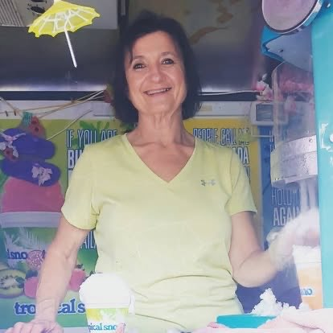

Who is the Ice Lady?
Everyone knows her as the Ice Lady, but her real name is Selale. She has been serving the Locust area for over 24 years, bringing joy and refreshment to the community with her delicious shaved ice. The Ice Lady is passionate about creating memorable experiences for her customers and spreading happiness wherever she goes.
History
What started as a small shaved ice stand quickly grew into a beloved community tradition. The Ice Lady is known for her warm personality, dedication to quality, and the wide variety of flavors she offers. Whether it’s at local events, community parks, or private parties, she’s always ready to serve the best Tropical Sno around.
Mission
The Ice Lady’s mission is simple: to bring joy to the Locust area, one cup of shaved ice at a time. She believes that everyone deserves a little sweetness in their lives, and she’s dedicated to making that happen. With her commitment to quality, service, and community, the Ice Lady is more than just a shaved ice vendor—she’s a local legend.